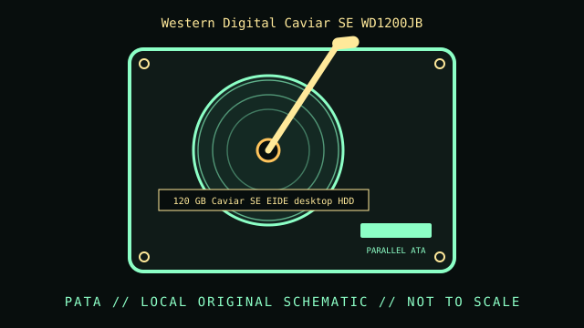

[ INDIVIDUAL COMPONENT // HARD DISK DRIVE ]
Western Digital Caviar SE WD1200JB
120 GB Caviar SE EIDE desktop HDD. This record is limited to the exact model and documented variant; related model numbers, revisions and capacities can have different interfaces and specifications.

IDENTIFICATION: Match the complete label, suffix, firmware and drive inquiry with the cited model documentation. Do not infer sector format or recording method from product family alone.
Verified model specifications
| Dedicated catalog subcategory | PATA / IDE desktop drives |
|---|---|
| Exact model | Western Digital Caviar SE WD1200JB |
| Product generation | 120 GB Caviar SE EIDE desktop HDD |
| Form factor | 3.5-inch desktop; this classification is not a dimensional drawing. |
| Interface | EIDE / PATA, Ultra ATA/100 family. |
| Capacity, performance, sector / recording details | 120 GB nominal capacity; 7200 RPM; 8 MB buffer as identified in WD Caviar SE documentation. Exact firmware and usable capacity can vary by host addressing/format. |
| Compatibility | PATA host required. Confirm 28-bit LBA support and OS partition/sector limits for a 120 GB disk; set the model’s master/slave/cable-select jumper correctly. |
Handling, service & preservation
- Keep the jumper setting, label, firmware, and host geometry documented. Check media read health and preserve a verified copy before migrating an old installation.
- Photograph the full label, board marks, connectors, jumpers/carrier, and date/firmware codes before service; retain the exact model suffix with collection metadata.
- Never open a hard drive outside a qualified clean environment. Stop repeated power-on attempts if the unit clicks, drops offline, or develops read errors.
- Preserve source data by making independent copies and validating checksums; SMART/self-tests cannot guarantee reliability. Distinguish measured condition from manufacturer specifications.
Model-specific source
- Western Digital Caviar SE EIDE specification sheet (archival datasheet copy)Model-specific WD1200JB product page and archived specifications; do not infer from similar WD1200JB/JB variants without checking the label.
For variants with family manuals, use the model-specific table and document revision that matches the drive label.